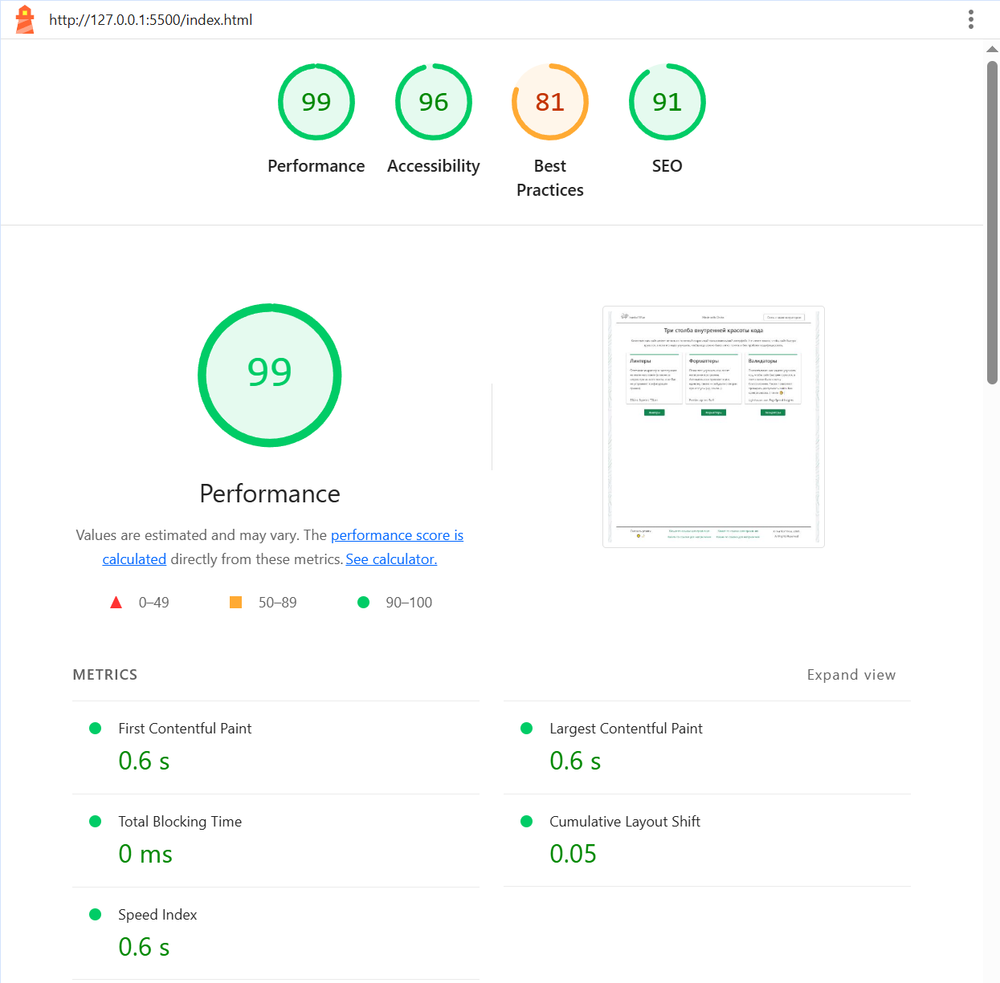
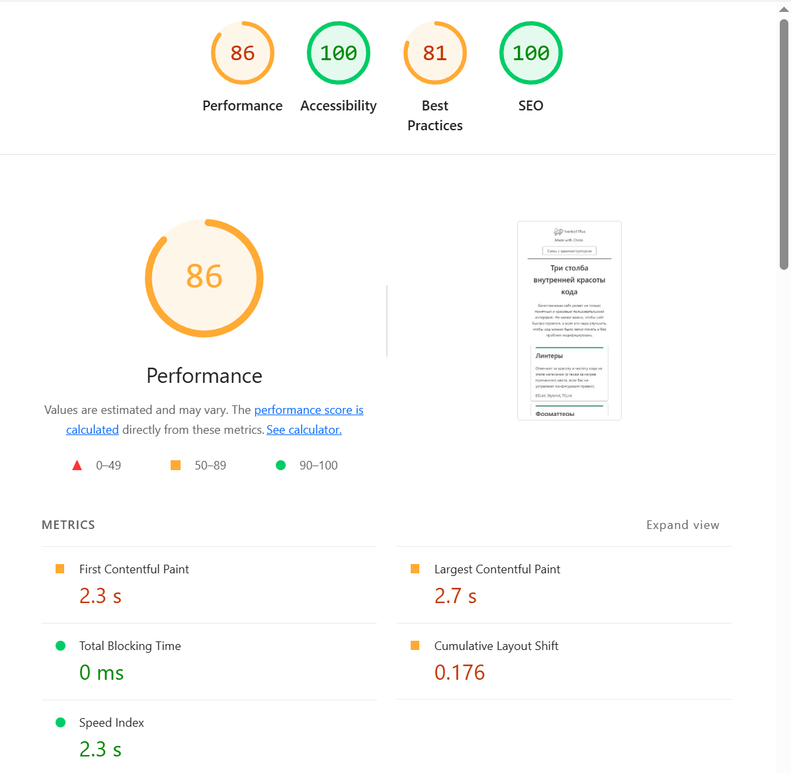
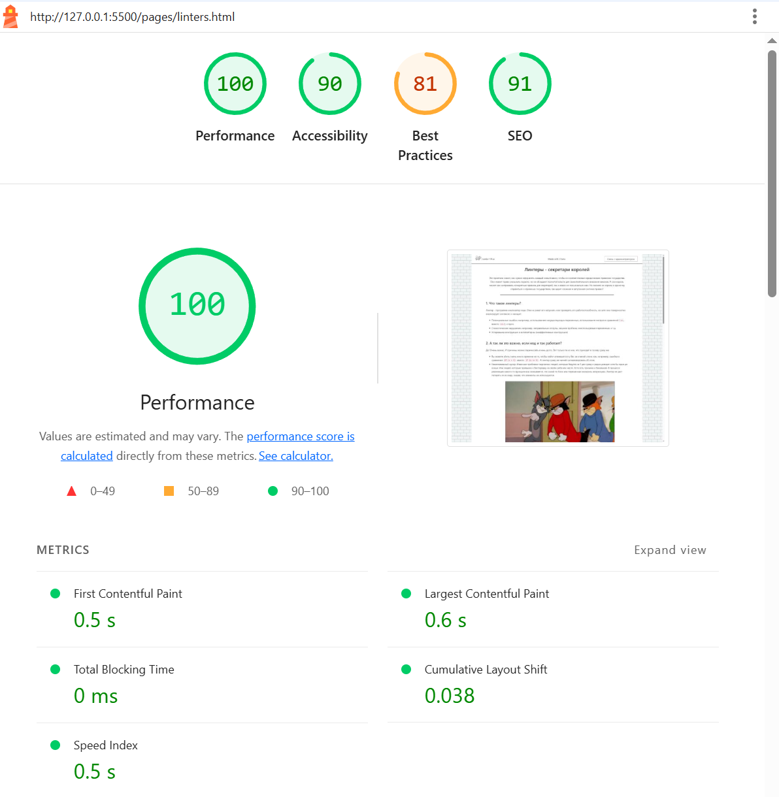
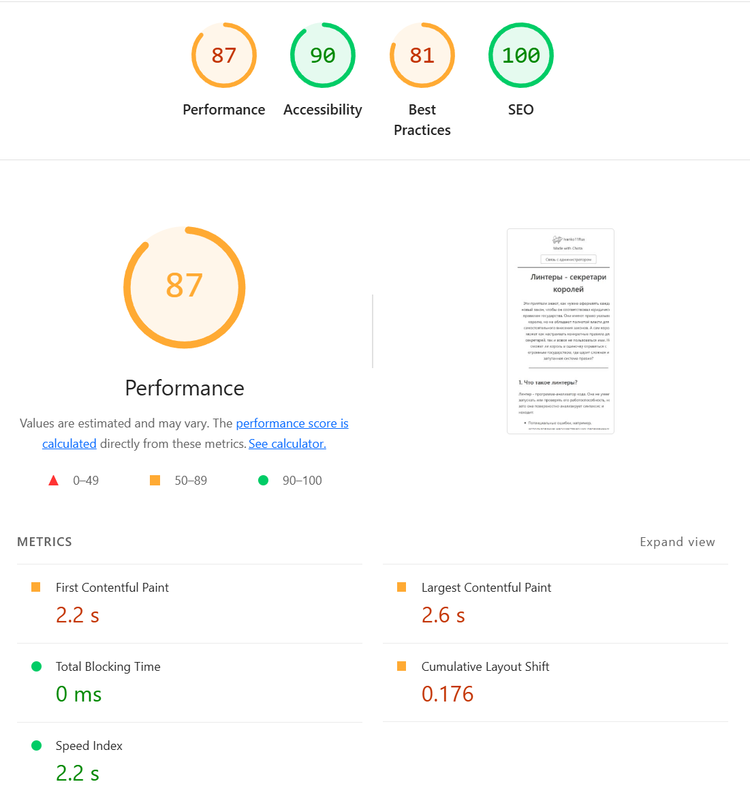
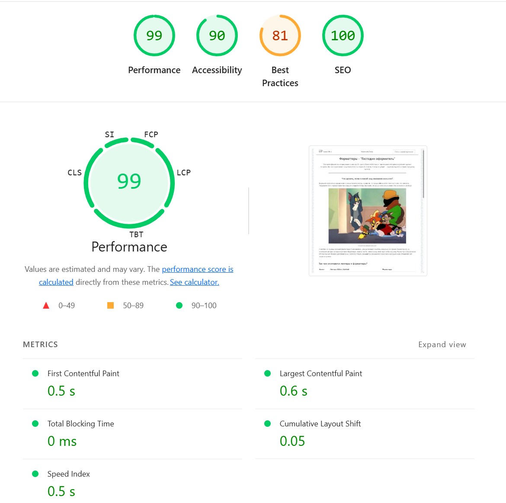
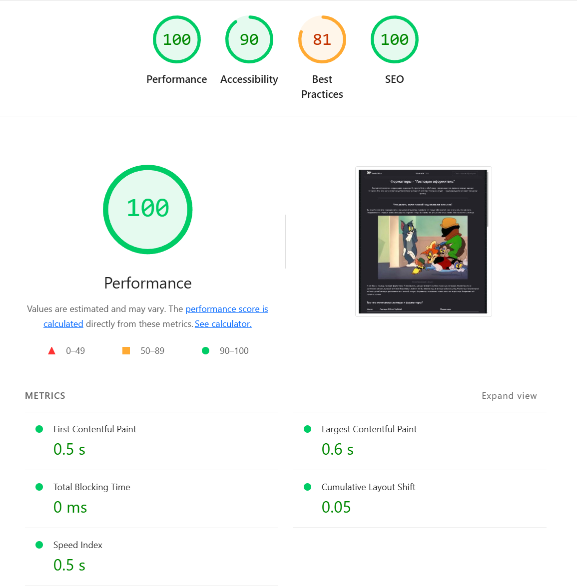
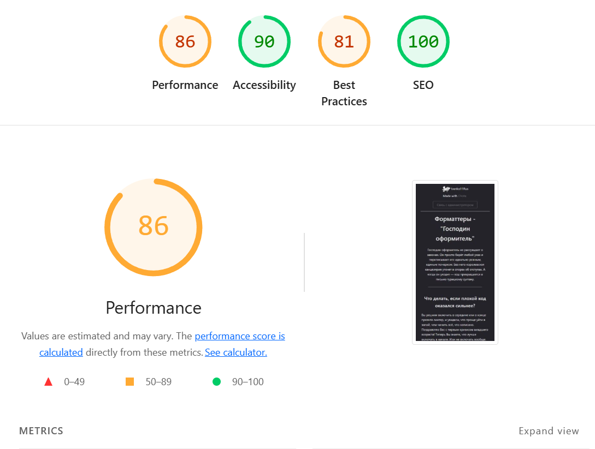

Применение на практике
Новоиспечённый король, дождавшись возраста совершеннолетия, вступает на престол. Полный максимализма, 12-летний властитель государства решает искоренить всё зло в своём государстве, и создаёт этот сайт. Настолько, насколько ему позволяют его знания и опыт. Посмотрим же на лица вельмож, которым предстоит изучать новый закон... Почему-то в нашей стране возрос интерес к монастырям и снижению пенсионного возраста.Прежде чем начнём...
Посмотрим, как оценит труд разработчика сайта lighthouse и axe до всех правок линтерами, форматтерами, ликвидаторами, экстреминаторами и прочими полезными программами и устройствами. Также заранее были заготовлены ошибки и не очень эффективные конструкции, такие как использование картинок не в figure + figcaption, а в img + div. Есть пересечения .css стилей (это не специально, это от неопытности). Есть загруженные в html, но скрытые и неиспользуемые кнопки.
Замеры стартовой страницы в режиме desktop

Очень неплохо
Отсутствие HTTPS.
Это основная причина, по которой балл за лучшие практики столь занижен. Проблема уйдёт сама собой, когда сайт будет загружен на github pages, так как он может обеспечить https, сейчас же сайт работает локально.Отсутствие тега main
Отсутствие тега main усложняет работу скринридеров. Причём, main не был использован только на домашней странице, на остальных страницах он есть. В любом случае, будет исправлено.
Отсутствие заголовков безопасности
Проблема частично уйдёт, когда сайт будет помещён на github pages. Тем не менее, придётся несколько понастраивать политику сайта и скрипты. Даже не знал, что такое бывает.Отсутствие тега meta с name="description"
Нейронная сеть даже предложила свой вариант готового кода для этого пункта, на основании того, что прочла о сайте в json. Не пренебрежём этим воспользоваться :)
Замечания
- Минимизация .css, .js, .html, а также убирание комментариев и неиспользуемых блоков кода может освободить не менее 150 кб. Ничоси, это-то на такой маленьком сайте!
- Рендер-блокирующие ресурсы. Как я понимаю, это либо работа расширений браузера, либо особенность chota. Не критично.
- Отсутствие кэширования. Можно настроить в github pages
Замеры стартовой страницы в режиме mobile

А вот тут уже не так радужно, возможно это получится списать на разработку desktop-first...
Замеры последующих страниц

Линтеры в desktop. Новые замечания :)
code. Вновь забытый meta с описанием. Исправим сразу на всех страницах это недоразумение. Ну, и ужатие картинок с css и js, да отсутствие https.

Линтеры в mobile

Форматтеры в desktop
Хотя вот что было замечено - сайт не проверяет страницу в тёмной теме. На скриншотах Lighthouse нет таких вариантов. Ради интереса, сделаем замер только этой странице, чтобы страница практики не превратилась в томик Достоевского.

Форматтеры в desktop в тёмной теме
- У картинки linters_n-bad-code-win.webp не заданы размеры, что вызывает смещение макета (CLS 0.05), 0.5 баллов вместо 1
- Ответ сервера не сжат, 11 кб возникли на ровном месте, 0.5 балла вместо 1.
- Длинная цепочка сетевых запросов (network-dependency-tree-insight), загружаемые css и js подтягивают ещё какие-то файлы. Что-то я не помню, чтобы я там что-то такое делал, так что камень chot-е. 0 баллов вместо 1.

Форматтеры в mobile в тёмной теме. Новых ошибок нет. Но снова развёрнутый ответ, почему в светлой теме было не так???
Загрузка на GitHub